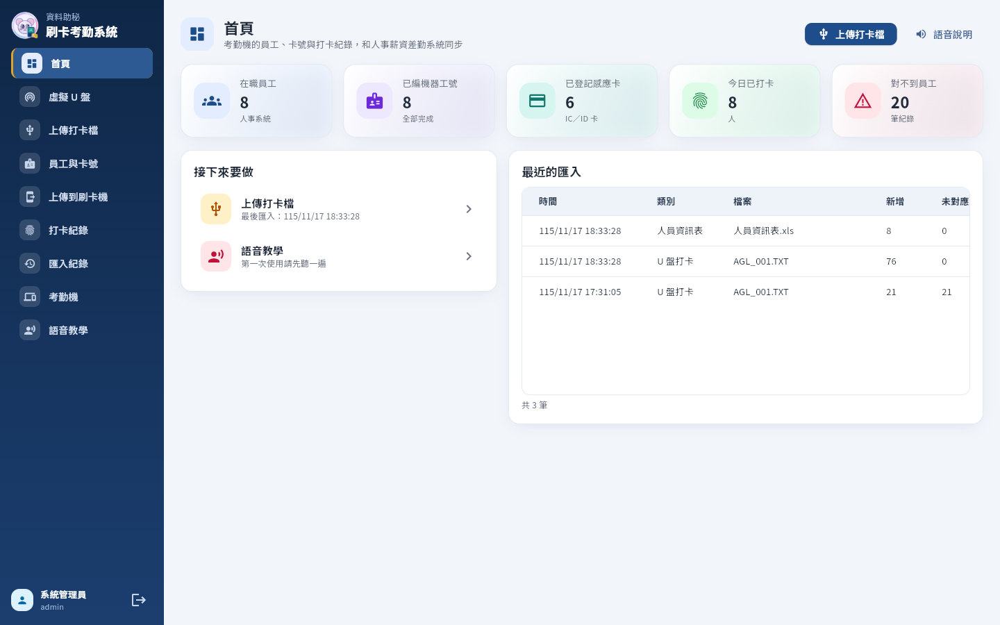
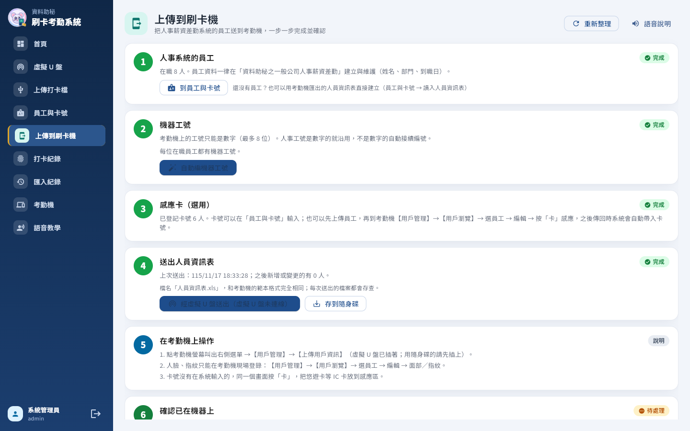
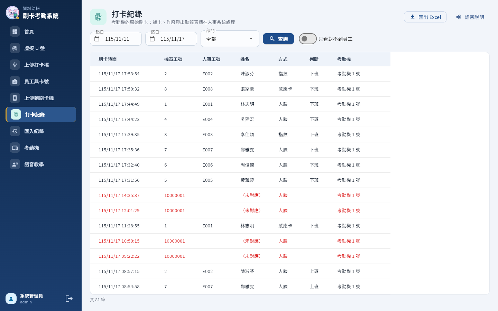
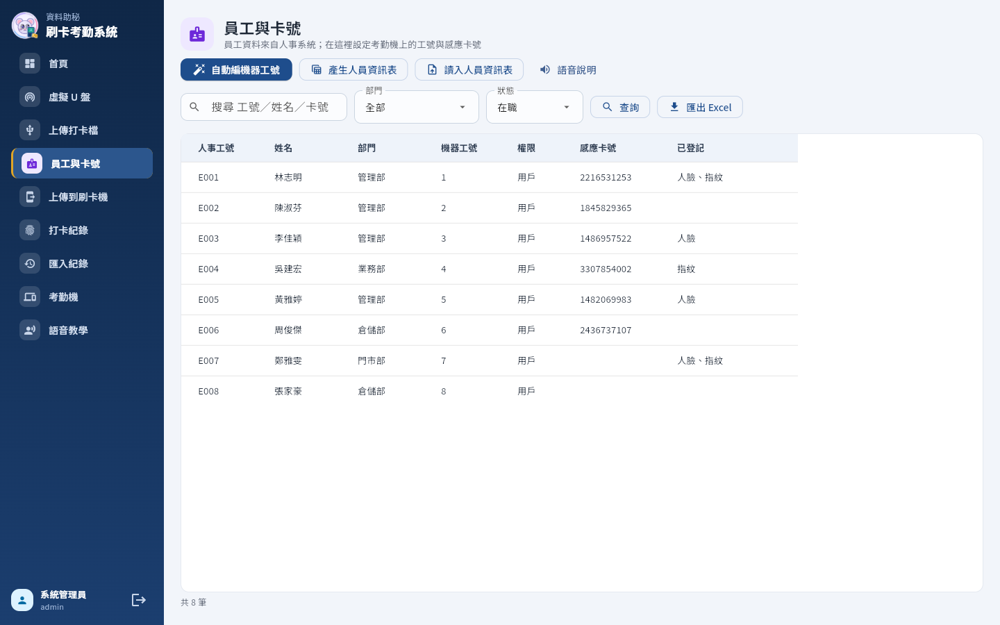
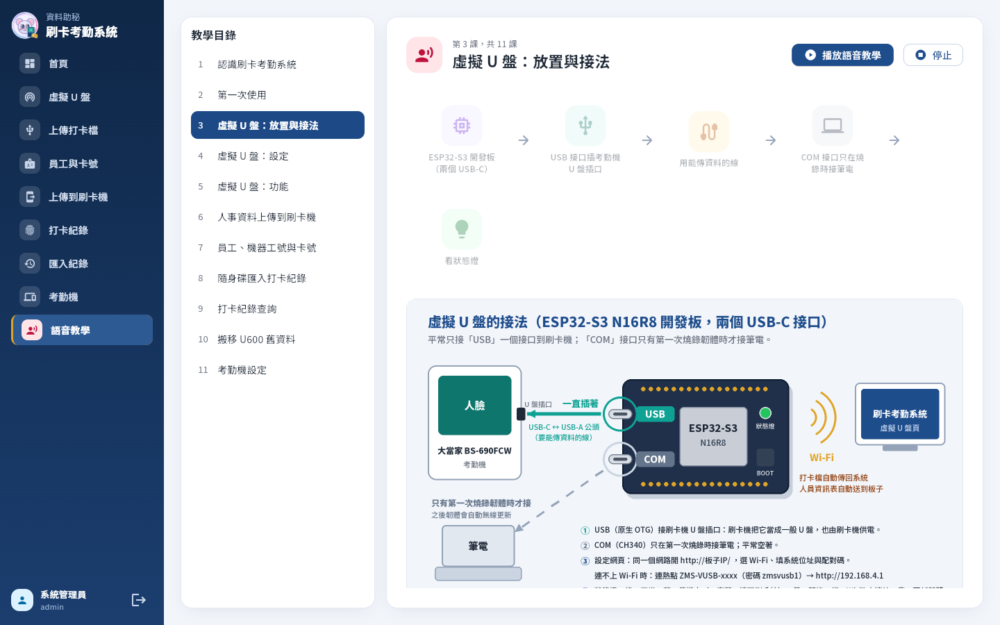
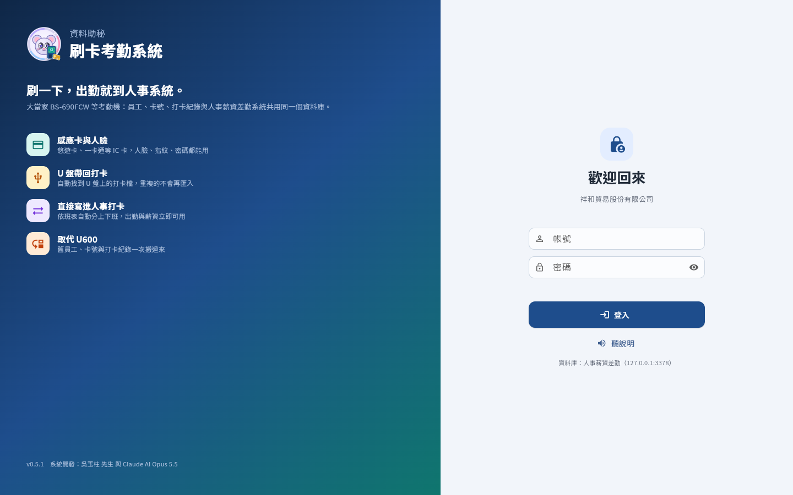

主要功能
wifi_tethering
虛擬 U 盤（免插拔）ESP32-S3 一直插在考勤機，打卡檔經 Wi-Fi 自動傳回、匯入並存查
send_to_mobile
上傳到刷卡機六步驟把人事系統員工送到考勤機，並確認誰已在機器上
fingerprint
自動分上下班依人事班表判斷（含跨夜班），寫進人事打卡，出勤與薪資直接用
inventory_2
不重複、可存查同一檔案只匯入一次，原始檔與送出的人員資訊表都原封不動保存
credit_card
員工與卡號悠遊卡、一卡通等 IC 卡；讀入考勤機的人員資訊表直接建立員工
move_down
U600 搬移一次搬來部門、員工、卡號與舊打卡（只讀，不改 U600）
語音動態教學
與程式內相同的 11 課臺灣華語語音；按「播放」後，步驟會跟著旁白依序亮起。
record_voice_over
範例畫面
人事系統範例公司「祥和貿易」的虛構資料。點圖片放大。






公司內的線上版
考勤資料存在公司電腦（人事系統的 MariaDB），所以真正的線上版由公司電腦提供。
| 開啟 | 公司電腦的考勤系統 →「系統與更新」→ 打開「線上版」。畫面會顯示網址與 QR Code（預設埠 8597）。 |
|---|---|
| 使用 | 同一個網路的電腦、平板用瀏覽器開網址，用人事系統的帳號登入（需要出勤管理權限）。畫面與桌面版相同、資料即時。 |
| 檔案 | 打卡檔從瀏覽器上傳匯入；匯出 Excel、人員資訊表、存查原始檔會下載到瀏覽器。語音教學在瀏覽器播放。 |
| 不提供 | U600 搬移、系統與更新、虛擬 U 盤接收服務的開關與配對碼（只在公司電腦操作）。 |
| 停止 | 關閉公司電腦上的考勤系統，線上版會一起停止。 |
手機版面會在 iPhone／Android App 版本提供；目前線上版建議用電腦或平板。
下載與安裝
| Windows 10／11 | ZMSAttendance-Setup-<版本>.exe（SmartScreen 請按「其他資訊」→「仍要執行」） |
|---|---|
| macOS 11 以上 | ZMSAttendance-<版本>-mac.dmg（已經 Apple 公證） |
| iPhone／iPad | 用 Safari 開 安裝頁（內部測試版，限已登記的裝置）；公司電腦的考勤系統打開「手機 App 連線」，相機掃 QR Code 即可連線 |
| 虛擬 U 盤韌體 | vusb_esp32s3-<版本>.bin（第一次燒錄用；之後由系統無線更新） |
請先安裝 資料助秘之一般公司人事薪資差勤。